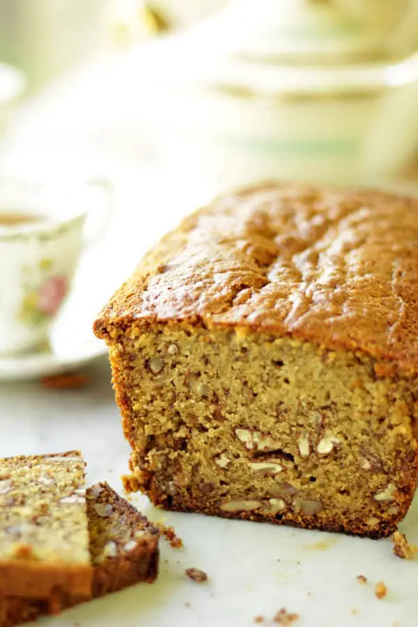

Panque de Platano

Panque de platano
Esta receta de pan de plátano lo tiene todo, es realmente sencilla de hacer y en menos de 15 minutos está lista para el horno.
Ingredientes
- 3 plátanos (bananas) maduros
- 2 tazas de harina (300 g)
- 1 cucharadita de sal
- 1 cucharadita de polvo para hornear
- 1 cucharadita de bicarbonato de sodio
- 2 huevos
- 1 cucharada de leche
Procedimiento
- Mezclar la harina, junto con el polvo para hornear, la sal y el bicarbonato.
- En un recipiente poner la mantequilla a temperatura ambiente y mezclar con el azúcar ayudándote con una espátula.
- Con un tenedor aplastar bien los plátanos.
- Agregar el huevo, la vainilla, la leche y los plátanos a la mezcla de la mantequilla e integrar bien.